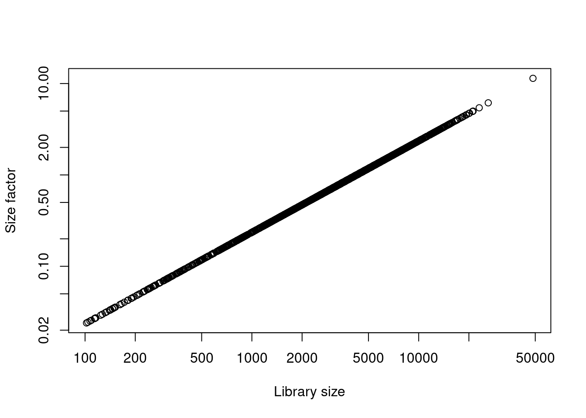

library(BiocFileCache)
bfc <- BiocFileCache()
raw.path <- bfcrpath(bfc, file.path(
"http://cf.10xgenomics.com/samples",
"cell-exp/2.1.0/pbmc4k/pbmc4k_raw_gene_bc_matrices.tar.gz"
))
untar(raw.path, exdir = file.path(tempdir(), "pbmc4k"))
library(DropletUtils)
library(Matrix)
fname <- file.path(tempdir(), "pbmc4k/raw_gene_bc_matrices/GRCh38")
sce.pbmc <- read10xCounts(fname, col.names = TRUE)Reporte scRNA
Cargando paquetes
Los datos se obtuvieron de Public Health Sciences Division, Translational Research Program, Fred Hutchinson Cancer Research Center, Seattle, 98109, Washington, USA(Zheng et al. 2017).
Anotacion de genes
library(scater)
rownames(sce.pbmc) <- uniquifyFeatureNames(
rowData(sce.pbmc)$ID, rowData(sce.pbmc)$Symbol
)
library(EnsDb.Hsapiens.v86)
location <- mapIds(EnsDb.Hsapiens.v86,
keys = rowData(sce.pbmc)$ID,
column = "SEQNAME", keytype = "GENEID"
)Warning: Unable to map 144 of 33694 requested IDs.set.seed(100)
e.out <- emptyDrops(counts(sce.pbmc))
sce.pbmc <- sce.pbmc[, which(e.out$FDR <= 0.001)]Tabla de outliers
Table 1 es una tabla que nos muestra los outliers de las primeras 20 células.
library(dplyr)
library(gt)
df <- data.frame(e.out[1-20])
df |>
slice_head(n = 10) |>
gt() |>
tab_header(
title = "Outliers",
subtitle = "Outliers de las primeras 20 células"
)| Outliers | ||||
| Outliers de las primeras 20 células | ||||
| Total | LogProb | PValue | Limited | FDR |
|---|---|---|---|---|
| 1 | NA | NA | NA | NA |
| 0 | NA | NA | NA | NA |
| 1 | NA | NA | NA | NA |
| 0 | NA | NA | NA | NA |
| 1 | NA | NA | NA | NA |
| 1 | NA | NA | NA | NA |
| 0 | NA | NA | NA | NA |
| 0 | NA | NA | NA | NA |
| 0 | NA | NA | NA | NA |
| 1 | NA | NA | NA | NA |
Estimación de librerias
```{r}
#| label: fig-p1
#| fig-cap: Tamaño de libreria
#| output-location: slide
#| message: false
## Calculando el tamaño de las librerias
lib.sf.pbmc <- librarySizeFactors(sce.pbmc) # <1>
ls.pbmc <- colSums(counts(sce.pbmc)) # <2>
plot(ls.pbmc, lib.sf.pbmc, log="xy", # <3>
xlab="Library size", ylab="Size factor") # <3>
```
- Estimar factores de normalización
- Calcular el tamaño de las librerias
- Plot
References
Zheng, Grace X. Y., Jessica M. Terry, Phillip Belgrader, Paul Ryvkin, Zachary W. Bent, Ryan Wilson, Solongo B. Ziraldo, et al. 2017. “Massively Parallel Digital Transcriptional Profiling of Single Cells.” Nature Communications 8 (1). https://doi.org/10.1038/ncomms14049.